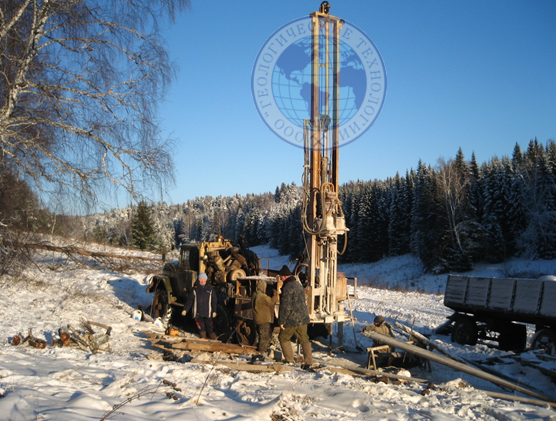
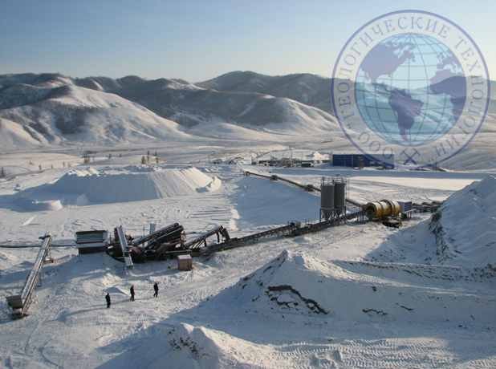
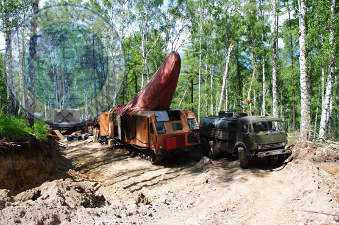
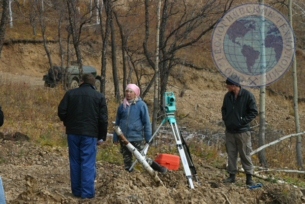
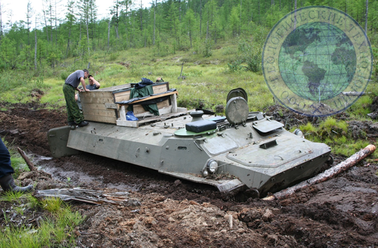
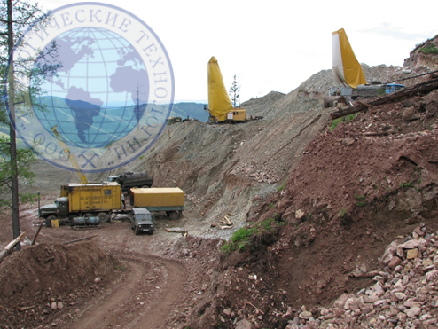

 
Наше предприятие выполняет работы по проектированию геолого-поисковых, геолого-оценочных и геологоразведочных работ на все основные виды твердых полезных ископаемых. Мы разрабатываем методические, экономические и экологические части проектов с учетом требований законодательства, с использованием современных технических средств и методик разведки. Наши заказчики в короткие сроки получают проекты с согласованным геологическим заданиям и положительным заключением государственной экспертизы.
 
Наше предприятие выполняет поисковые, оценочные и разведочные работы на месторождениях всех основных видов твердых полезных ископаемых. Мы используем буровые, горные и горно-буровые системы разведки, современные буровые станки и горную технику. Применяемые технологии опробования полезных ископаемых и пробоподготовки обеспечивают их высокую представительность и достоверность. Все виды геологоразведочных работ сопровождаются инструментальными маркшейдерскими и топографо-геодезическими съемками. При выполнении полевых и камеральных работ используется современное программное обеспечение для геологических построений и подсчета запасов (Micromine, Surpec, AutoCAD и др.).
По заявкам заказчиков, на материалах их разведочных работ наши специалисты разрабатывают ТЭО разведочных кондиций для подсчета запасов и подготавливают отчеты с подсчетом запасов. Предприятие имеет опыт защиты в ТКЗ и ГКЗ ТЭО кондиций и подсчета запасов по молибденовым, медным, золотрудным, хромитовым месторождениям полезных ископаемых, месторождениям камнесамоцветного сырья и воды.
 